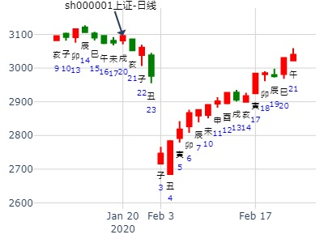
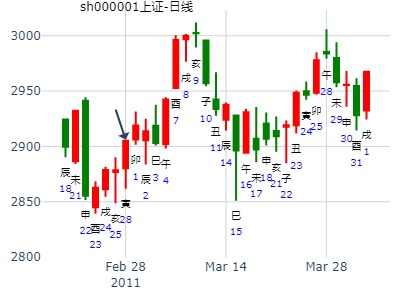
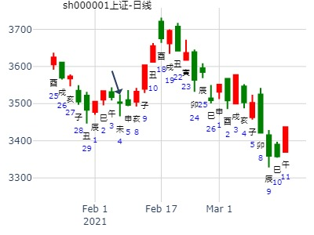
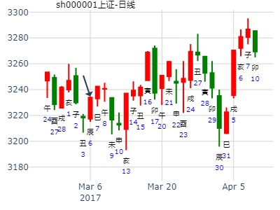
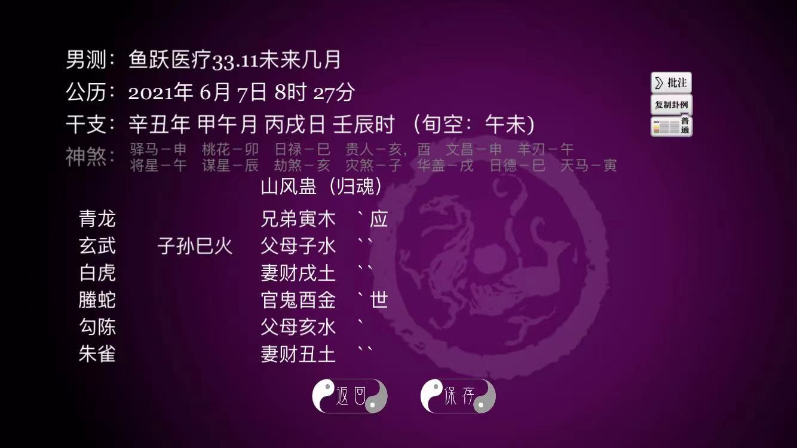

主帖标题: 下周股票涨跌卦，放在一起吧。
公历时间：2020年1月19日19时41分
干 支：己亥年 丁丑月 辛酉日 戊戌时
旬 空：辰巳 申酉 子丑 辰巳
巽宫：山风蛊（归魂）
六神 伏 神 【本 卦】
螣蛇 ▄▄▄▄▄ 兄弟丙寅木 应
勾陈 子孙辛巳火 ▄▄ ▄▄ 父母丙子水
朱雀 ▄▄ ▄▄ 妻财丙戌土
青龙 ▄▄▄▄▄ 官鬼辛酉金 世
玄武 ▄▄▄▄▄ 父母辛亥水
白虎 ▄▄ ▄▄ 妻财辛丑土

参考：隔日共振卦
来自：山风蛊静卦，子孙伏藏又日破，武汉肺炎影响大跌.md
2020-01-20 日卦 也是蛊
山风蛊静卦，子孙伏藏又日破，武汉肺炎影响大跌.md
明天上证指数走势
时间: 2020-01-20
干支: 己亥年丁丑月壬戌日 (旬空: 子丑 )
蛊静卦(归魂)
白虎 ▅▅▅▅▅ 兄弟寅木 应
腾蛇 子孙巳火▅▅ ▅▅ 父母子水
勾陈 ▅▅ ▅▅ 妻财戌土
朱雀 ▅▅▅▅▅ 官鬼酉金 世
青龙 ▅▅▅▅▅ 父母亥水
玄武 ▅▅ ▅▅ 妻财丑土
元亨，利涉大川。 先甲三日，后甲三日。
参考：昨天周卦也是蛊
观者 | 2009-02-26 19:37 |
占事：27日上证大盘? 排卦：元亨利贞网六爻在线排盘系统
公历起卦时间：2009年2月26日19时35分 (在线摇卦)
干支：己丑年 丙寅月 壬寅日 庚戌时 （日空：辰巳）
蛊静卦 (归魂)
白虎 ▅▅▅▅▅ 兄弟寅木 应
腾蛇 子孙巳火▅▅ ▅▅ 父母子水
勾陈 ▅▅ ▅▅ 妻财戌土
朱雀 ▅▅▅▅▅ 官鬼酉金 世
青龙 ▅▅▅▅▅ 父母亥水
玄武 ▅▅ ▅▅ 妻财丑土
此处似乎世爻酉金为重点。申日却大涨。（前面的寅卯日大跌）
占事：测下周大盘 手摇卦 3.2-3.6日大盘
2009-02-27
干支：己丑年 丙寅月 癸卯日 辛酉时 （日空：辰巳）
巽宫：山风蛊 (归魂) 巽宫：山风蛊 (归魂)
六神 伏神 本 卦 变 卦
白虎 兄弟丙寅木 ▅▅▅▅▅ 应 兄弟丙寅木 ▅▅▅▅▅ 应
腾蛇 子孙辛巳火 父母丙子水 ▅▅ ▅▅ 父母丙子水 ▅▅ ▅▅
勾陈 妻财丙戌土 ▅▅ ▅▅ 妻财丙戌土 ▅▅ ▅▅
朱雀 官鬼辛酉金 ▅▅▅▅▅ 世 官鬼辛酉金 ▅▅▅▅▅ 世
青龙 父母辛亥水 ▅▅▅▅▅ 父母辛亥水 ▅▅▅▅▅
玄武 妻财辛丑土 ▅▅ ▅▅ 妻财辛丑土 ▅▅ ▅▅
周1丙午日，父母暗动生应，跌。
周2未日，兄弟丙寅木入墓，世爻受生，平盘。
周3申日，兄弟丙寅木临绝地，大涨或中涨
周4酉日，官鬼辛酉金值日，大中涨
周5戌日，小涨。
主帖标题: 尝试预判一下本周大盘走势？
2011年 2月 25日 14时 33分 (起卦方式：手动指定)
占上证大盘K线下周走势
干支：辛卯年 庚寅月 辛亥日 乙未时 日空亡：寅卯
神煞：驿马－巳 桃花－子 日禄－酉 贵人－寅，午
巽宫：山风蛊 (归魂)
六神 伏神 本 卦
螣蛇 兄弟寅木 ▅▅▅▅▅ 应
勾陈 子孙巳火 父母子水 ▅▅ ▅▅
朱雀 妻财戌土 ▅▅ ▅▅
青龙 官鬼酉金 ▅▅▅▅▅ 世
玄武 父母亥水 ▅▅▅▅▅
白虎 妻财丑土 ▅▅ ▅▅
周一涨周二涨周三跌周四大跌周五跌

主帖标题: 测苏州银行2.20-2.28哪日顶？
男 占事：测苏州银行2.20癸巳-2.28哪日顶？
公历起卦时间：2020年2月21日20时6分 (电脑自动)
干支：庚子年 戊寅月 甲午日 甲戌时 （日空：辰巳）
巽宫：山风蛊 (归魂) 巽宫：山风蛊 (归魂)
六神 伏神 本 卦 变 卦
玄武 兄弟丙寅木 ▅▅▅▅▅ 应 兄弟丙寅木 ▅▅▅▅▅ 应
白虎 子孙辛巳火 父母丙子水 ▅▅ ▅▅ 父母丙子水 ▅▅ ▅▅
螣蛇 妻财丙戌土 ▅▅ ▅▅ 妻财丙戌土 ▅▅ ▅▅
勾陈 官鬼辛酉金 ▅▅▅▅▅ 世 官鬼辛酉金 ▅▅▅▅▅ 世
朱雀 父母辛亥水 ▅▅▅▅▅ 父母辛亥水 ▅▅▅▅▅
青龙 妻财辛丑土 ▅▅ ▅▅ 妻财辛丑土 ▅▅ ▅▅
主帖标题: 测4日沪市大盘
公历起卦时间：2021年2月4日8时9分 (手工指定)
干支：辛丑年 庚寅月 癸未日 丙辰时 （日空：申酉）
巽宫：山风蛊 (归魂)
六神 伏神 本 卦
白虎 兄弟丙寅木 ▅▅▅▅▅ 应
螣蛇 子孙辛巳火 父母丙子水 ▅▅ ▅▅
勾陈 妻财丙戌土 ▅▅ ▅▅
朱雀 官鬼辛酉金 ▅▅▅▅▅ 世
青龙 父母辛亥水 ▅▅▅▅▅
玄武 妻财辛丑土 ▅▅ ▅▅
K线卦。
世旺财旺，未日丑暗动，还是弱三刑。
世空，财过旺的嫌疑。
和上面的卦信息一致。

试测驰宏锌诸2.22辛丑一-2.26乙巳哪日顶？
公历起卦时间：2021年2月22日14时32分 (电脑自动)
干支：辛丑年 庚寅月 辛丑日 乙未时 （日空：辰巳）
巽宫：山风蛊 (归魂) 巽宫：山风蛊 (归魂)
螣蛇 兄弟丙寅木 ▅▅▅▅▅ 应 兄弟丙寅木 ▅▅▅▅▅ 应
勾陈 子孙辛巳火 父母丙子水 ▅▅ ▅▅ 父母丙子水 ▅▅ ▅▅
朱雀 妻财丙戌土 ▅▅ ▅▅ 妻财丙戌土 ▅▅ ▅▅
青龙 官鬼辛酉金 ▅▅▅▅▅ 世 官鬼辛酉金 ▅▅▅▅▅ 世
玄武 父母辛亥水 ▅▅▅▅▅ 父母辛亥水 ▅▅▅▅▅
白虎 妻财辛丑土 ▅▅ ▅▅ 妻财辛丑土 ▅▅ ▅▅
主帖标题: 07大家一起来，九缠烂打：上证2021.2.23收盘 个位数是几？
男 占事：大小
公历起卦时间：2021年2月22日20时3分 (电脑自动)
干支：辛丑年 庚寅月 辛丑日 戊戌时 （日空：辰巳）
巽宫：山风蛊 (归魂) 巽宫：山风蛊 (归魂)
六神 伏神 本 卦 变 卦
螣蛇 兄弟丙寅木 ▅▅▅▅▅ 应 兄弟丙寅木 ▅▅▅▅▅ 应
勾陈 子孙辛巳火 父母丙子水 ▅▅ ▅▅ 父母丙子水 ▅▅ ▅▅
朱雀 妻财丙戌土 ▅▅ ▅▅ 妻财丙戌土 ▅▅ ▅▅
青龙 官鬼辛酉金 ▅▅▅▅▅ 世 官鬼辛酉金 ▅▅▅▅▅ 世
玄武 父母辛亥水 ▅▅▅▅▅ 父母辛亥水 ▅▅▅▅▅
白虎 妻财辛丑土 ▅▅ ▅▅ 妻财辛丑土 ▅▅ ▅▅
主帖标题: 2月22至2月26日大盘（日测）
明天周四涨跌
公历时间：2021年2月24日16时21分 农历时间：辛丑年 正月十三日申时
干 支：辛丑年 庚寅月 癸卯日 庚申时
旬 空：辰巳 午未 辰巳 子丑
神 煞：驿马─巳 桃花─子 日禄─子 贵人─巳，卯
巽宫：山风蛊（归魂）
六神 伏 神 【本 卦】
白虎 ▄▄▄▄▄ 兄弟丙寅木 应
螣蛇 子孙辛巳火 ▄▄ ▄▄ 父母丙子水
勾陈 ▄▄ ▄▄ 妻财丙戌土
朱雀 ▄▄▄▄▄ 官鬼辛酉金 世
青龙 ▄▄▄▄▄ 父母辛亥水
玄武 ▄▄ ▄▄ 妻财辛丑土
主帖标题: 2022年第9周2月28至3月4日个股300491和600031预测汇总
2022年第9周2月28至3月4日个股300491预测
公历时间：2022年2月25日16时37分 农历时间：壬寅年 正月二十五日申时
干 支：壬寅年 壬寅月 己酉日 壬申时
旬 空：辰巳 辰巳 寅卯 戌亥
神 煞：驿马─亥 桃花─午 日禄─午 贵人─子，申
巽宫：山风蛊（归魂）
六神 伏 神 【本 卦】
勾陈 ▄▄▄▄▄ 兄弟丙寅木 应
朱雀 子孙辛巳火 ▄▄ ▄▄ 父母丙子水
青龙 ▄▄ ▄▄ 妻财丙戌土
玄武 ▄▄▄▄▄ 官鬼辛酉金 世
白虎 ▄▄▄▄▄ 父母辛亥水
螣蛇 ▄▄ ▄▄ 妻财辛丑土
主帖标题: 【大盘预测大赛】沪市3月5日的大盘走势
起卦方式：手动摇卦 周易天地六爻线上排盘系统
公历时间：2008年3月4日15时49分
干支：戊子年 甲寅月 癸卯日 庚申时 旬空：午未 子丑 辰巳 子丑
蛊静卦 (归魂)
白虎 ▅▅▅▅▅ 兄弟寅木 应
腾蛇 子孙巳火▅▅ ▅▅ 父母子水
勾陈 ▅▅ ▅▅ 妻财戌土
朱雀 ▅▅▅▅▅ 官鬼酉金 世
青龙 ▅▅▅▅▅ 父母亥水
玄武 ▅▅ ▅▅ 妻财丑土
蛊静卦 山风蛊静卦，测09年3月18日大盘走势。.md
公历起卦时间：2009年3月17日16时38分 (在线摇卦)
干支：己丑年 丁卯月 辛酉日 丙申时 （日空：子丑）
巽宫：山风蛊 (归魂) 巽宫：山风蛊 (归魂)
六神 伏神 本 卦 变 卦
腾蛇 兄弟丙寅木 ▅▅▅▅▅ 应 兄弟丙寅木 ▅▅▅▅▅ 应
勾陈 子孙辛巳火 父母丙子水 ▅▅ ▅▅ 父母丙子水 ▅▅ ▅▅
朱雀 妻财丙戌土 ▅▅ ▅▅ 妻财丙戌土 ▅▅ ▅▅
青龙 官鬼辛酉金 ▅▅▅▅▅ 世 官鬼辛酉金 ▅▅▅▅▅ 世
玄武 父母辛亥水 ▅▅▅▅▅ 父母辛亥水 ▅▅▅▅▅
白虎 妻财辛丑土 ▅▅ ▅▅ 妻财辛丑土 ▅▅ ▅▅
戌日。
出生：没填 年 性别：男 占事：周五3月18日申日大盘涨跌
排卦：元亨利贞网六爻在线排盘系统
公历起卦时间：2011年3月17日18时4分 (在线摇卦)
干支：辛卯年 辛卯月 辛未日 丁酉时 （日空：戌亥）
巽宫：山风蛊 (归魂) 巽宫：山风蛊 (归魂)
六神 伏神 本 卦 变 卦
腾蛇 兄弟丙寅木 ▅▅▅▅▅ 应 兄弟丙寅木 ▅▅▅▅▅ 应
勾陈 子孙辛巳火 父母丙子水 ▅▅ ▅▅ 父母丙子水 ▅▅ ▅▅
朱雀 妻财丙戌土 ▅▅ ▅▅ 妻财丙戌土 ▅▅ ▅▅
青龙 官鬼辛酉金 ▅▅▅▅▅ 世 官鬼辛酉金 ▅▅▅▅▅ 世
玄武 父母辛亥水 ▅▅▅▅▅ 父母辛亥水 ▅▅▅▅▅
白虎 妻财辛丑土 ▅▅ ▅▅ 妻财辛丑土 ▅▅ ▅▅

测沪深股市今日走势：3218.3 丹霞天然
起卦方式：手动摇卦
公历时间：2017年3月6日6时56分
干 支：丁酉年 癸卯月 壬辰日 癸卯时
旬 空：辰巳 辰巳 (午未) 辰巳
巽宫：山风蛊（归魂）
六神 伏 神 【本 卦】
白虎 ▄▄▄▄▄ 兄弟丙寅木 应
螣蛇 子孙辛巳火 ▄▄ ▄▄ 父母丙子水
勾陈 ▄▄ ▄▄ 妻财丙戌土
朱雀 ▄▄▄▄▄ 官鬼辛酉金 世
青龙 ▄▄▄▄▄ 父母辛亥水
玄武 ▄▄ ▄▄ 妻财辛丑土

主帖标题: 捍卫老祖宗感通卦的尊严：测2020.3.11上证收盘走势？赛03
测2020.3.11上证收盘走势？
公历起卦时间：2020年3月11日8时27分 (电脑自动)
干支：庚子年 己卯月 癸丑日 丙辰时 （日空：寅卯）
巽宫：山风蛊 (归魂) 巽宫：山风蛊 (归魂)
六神 伏神 本 卦 变 卦
白虎 兄弟丙寅木 ▅▅▅▅▅ 应 兄弟丙寅木 ▅▅▅▅▅ 应
螣蛇 子孙辛巳火 父母丙子水 ▅▅ ▅▅ 父母丙子水 ▅▅ ▅▅
勾陈 妻财丙戌土 ▅▅ ▅▅ 妻财丙戌土 ▅▅ ▅▅
朱雀 官鬼辛酉金 ▅▅▅▅▅ 世 官鬼辛酉金 ▅▅▅▅▅ 世
青龙 父母辛亥水 ▅▅▅▅▅ 父母辛亥水 ▅▅▅▅▅
玄武 妻财辛丑土 ▅▅ ▅▅ 妻财辛丑土 ▅▅ ▅▅
主帖标题: A大家一起来，试测上证3.9收盘个位数？
3：男 占事：几？
公历起卦时间：2021年3月9日14时44分 (电脑自动)
干支：辛丑年 辛卯月 丙辰日 乙未时 （日空：子丑）
巽宫：山风蛊 (归魂) 巽宫：山风蛊 (归魂)
六神 伏神 本 卦 变 卦
青龙 兄弟丙寅木 ▅▅▅▅▅ 应 兄弟丙寅木 ▅▅▅▅▅ 应
玄武 子孙辛巳火 父母丙子水 ▅▅ ▅▅ 父母丙子水 ▅▅ ▅▅
白虎 妻财丙戌土 ▅▅ ▅▅ 妻财丙戌土 ▅▅ ▅▅
螣蛇 官鬼辛酉金 ▅▅▅▅▅ 世 官鬼辛酉金 ▅▅▅▅▅ 世
勾陈 父母辛亥水 ▅▅▅▅▅ 父母辛亥水 ▅▅▅▅▅
朱雀 妻财辛丑土 ▅▅ ▅▅ 妻财辛丑土 ▅▅ ▅▅
男 占事：上港集团(600018)明天涨跌
公历起卦时间：2014年5月14日15时22分 (电脑自动)
干支：甲午年 己巳月 乙酉日 甲申时 （日空：午未）
巽宫：山风蛊 (归魂) 巽宫：山风蛊 (归魂)
六神 伏神 本 卦 变 卦
玄武 兄弟丙寅木 ▅▅▅▅▅ 应 兄弟丙寅木 ▅▅▅▅▅ 应
白虎 子孙辛巳火 父母丙子水 ▅▅ ▅▅ 父母丙子水 ▅▅ ▅▅
腾蛇 妻财丙戌土 ▅▅ ▅▅ 妻财丙戌土 ▅▅ ▅▅
勾陈 官鬼辛酉金 ▅▅▅▅▅ 世 官鬼辛酉金 ▅▅▅▅▅ 世
朱雀 父母辛亥水 ▅▅▅▅▅ 父母辛亥水 ▅▅▅▅▅
青龙 妻财辛丑土 ▅▅ ▅▅ 妻财辛丑土 ▅▅ ▅▅
幸福的伟兄 占事：午月上证
公历起卦时间：2012年6月4日9时28分 (电脑自动)
干支：壬辰年 乙巳月 丙申日 癸巳时 （日空：辰巳）
巽宫：山风蛊 (归魂) 巽宫：山风蛊 (归魂)
六神 伏神 本 卦 变 卦
青龙 兄弟丙寅木 ▅▅▅▅▅ 应 兄弟丙寅木 ▅▅▅▅▅ 应
玄武 子孙辛巳火 父母丙子水 ▅▅ ▅▅ 父母丙子水 ▅▅ ▅▅
白虎 妻财丙戌土 ▅▅ ▅▅ 妻财丙戌土 ▅▅ ▅▅
腾蛇 官鬼辛酉金 ▅▅▅▅▅ 世 官鬼辛酉金 ▅▅▅▅▅ 世
勾陈 父母辛亥水 ▅▅▅▅▅ 父母辛亥水 ▅▅▅▅▅
朱雀 妻财辛丑土 ▅▅ ▅▅ 妻财辛丑土 ▅▅ ▅▅
（子孙空而且伏）
风生水起 江西铜业未来二周 起卦方式：手动摇卦
公历时间：2015年6月9日9时5分
干 支：乙未年 壬午月 丙辰日 癸巳时
旬 空：辰巳 申酉 子丑 午未
巽宫：山风蛊（归魂）
六神 伏 神 【本 卦】
青龙 ▄▄▄▄▄ 兄弟丙寅木 应
玄武 子孙辛巳火 ▄▄ ▄▄ 父母丙子水
白虎 ▄▄ ▄▄ 妻财丙戌土
螣蛇 ▄▄▄▄▄ 官鬼辛酉金 世
勾陈 ▄▄▄▄▄ 父母辛亥水
朱雀 ▄▄ ▄▄ 妻财辛丑土
主帖标题: 000929兰州黄河下周20至24日涨跌
占事：000929兰州黄河明天涨跌 排卦：元亨利贞网
公历起卦时间：2016年6月19日14时51分 (电脑自动)
干支：丙申年 甲午月 壬申日 丁未时 （日空：戌亥）
蛊静卦 (归魂)
白虎 ▅▅▅▅▅ 兄弟寅木 应
腾蛇 子孙巳火▅▅ ▅▅ 父母子水
勾陈 ▅▅ ▅▅ 妻财戌土
朱雀 ▅▅▅▅▅ 官鬼酉金 世
青龙 ▅▅▅▅▅ 父母亥水
玄武 ▅▅ ▅▅ 妻财丑土
鱼跃医疗未来几月，山风蛊静卦
时间: 2021-06-07 8时27分
干支: 辛丑年甲午月丙戌日 (旬空: 午未 )
蛊静卦 (归魂)
青龙 ▅▅▅▅▅ 兄弟寅木 应
玄武 子孙巳火▅▅ ▅▅ 父母子水
白虎 ▅▅ ▅▅ 妻财戌土
腾蛇 ▅▅▅▅▅ 官鬼酉金 世
勾陈 ▅▅▅▅▅ 父母亥水
朱雀 ▅▅ ▅▅ 妻财丑土

主帖标题: 上证6.8收盘走势？原。z重。
男 占事：wxxs
公历起卦时间：2022年6月8日8时30分 (电脑自动)
干支：壬寅年 丙午月 壬辰日 甲辰时 （日空：午未）
巽宫：山风蛊 (归魂) 巽宫：山风蛊 (归魂)
六神 伏神 本 卦 变 卦
白虎 兄弟丙寅木 ▅▅▅▅▅ 应 兄弟丙寅木 ▅▅▅▅▅ 应
螣蛇 子孙辛巳火 父母丙子水 ▅▅ ▅▅ 父母丙子水 ▅▅ ▅▅
勾陈 妻财丙戌土 ▅▅ ▅▅ 妻财丙戌土 ▅▅ ▅▅
朱雀 官鬼辛酉金 ▅▅▅▅▅ 世 官鬼辛酉金 ▅▅▅▅▅ 世
青龙 父母辛亥水 ▅▅▅▅▅ 父母辛亥水 ▅▅▅▅▅
玄武 妻财辛丑土 ▅▅ ▅▅ 妻财辛丑土 ▅▅ ▅▅
元亨利贞卦例 占事：8月下周一大盘走势
公历起卦时间：2011年7月29日15时40分 (在线摇卦)
干支：辛卯年 乙未月 乙酉日 甲申时 （日空：午未）
巽宫：山风蛊 (归魂) 巽宫：山风蛊 (归魂)
六神 伏神 本 卦 变 卦
玄武 兄弟丙寅木 ▅▅▅▅▅ 应 兄弟丙寅木 ▅▅▅▅▅ 应
白虎 子孙辛巳火 父母丙子水 ▅▅ ▅▅ 父母丙子水 ▅▅ ▅▅
腾蛇 妻财丙戌土 ▅▅ ▅▅ 妻财丙戌土 ▅▅ ▅▅
勾陈 官鬼辛酉金 ▅▅▅▅▅ 世 官鬼辛酉金 ▅▅▅▅▅ 世
朱雀 父母辛亥水 ▅▅▅▅▅ 父母辛亥水 ▅▅▅▅▅
青龙 妻财辛丑土 ▅▅ ▅▅ 妻财辛丑土 ▅▅ ▅▅
大跌之像！
主帖标题: 下周25日至29日几个股票涨跌
男 占事：300311任子行下周涨跌
公历起卦时间：2016年7月24日16时56分 (电脑自动)
干支：丙申年 乙未月 丁未日 戊申时 （日空：寅卯）
巽宫：山风蛊 (归魂) 巽宫：山风蛊 (归魂)
六神 伏神 本 卦 变 卦
青龙 兄弟丙寅木 ▅▅▅▅▅ 应 兄弟丙寅木 ▅▅▅▅▅ 应
玄武 子孙辛巳火 父母丙子水 ▅▅ ▅▅ 父母丙子水 ▅▅ ▅▅
白虎 妻财丙戌土 ▅▅ ▅▅ 妻财丙戌土 ▅▅ ▅▅
腾蛇 官鬼辛酉金 ▅▅▅▅▅ 世 官鬼辛酉金 ▅▅▅▅▅ 世
勾陈 父母辛亥水 ▅▅▅▅▅ 父母辛亥水 ▅▅▅▅▅
朱雀 妻财辛丑土 ▅▅ ▅▅ 妻财辛丑土 ▅▅ ▅▅
000831五矿稀土两周，山风蛊静卦，大涨。.md
时间: 2021-07-05 12时12分
干支: 辛丑年甲午月甲寅日 (旬空: 子丑 )
蛊静卦 (归魂)
玄武 ▅▅▅▅▅ 兄弟寅木 应
白虎 子孙巳火▅▅ ▅▅ 父母子水
腾蛇 ▅▅ ▅▅ 妻财戌土
勾陈 ▅▅▅▅▅ 官鬼酉金 世
朱雀 ▅▅▅▅▅ 父母亥水
青龙 ▅▅ ▅▅ 妻财丑土


测002053云南能投在2022年7月份走势
公历起卦时间：2022年7月2日19时37分 (手工指定)
干支：壬寅年 丙午月 丙辰日 戊戌时 （日空：子丑）
巽宫：山风蛊 (归魂) 巽宫：山风蛊 (归魂)
六神 伏神 本 卦 变 卦
青龙 兄弟丙寅木 ▅▅▅▅▅ 应 兄弟丙寅木 ▅▅▅▅▅ 应
玄武 子孙辛巳火 父母丙子水 ▅▅ ▅▅ 父母丙子水 ▅▅ ▅▅
白虎 妻财丙戌土 ▅▅ ▅▅ 妻财丙戌土 ▅▅ ▅▅
螣蛇 官鬼辛酉金 ▅▅▅▅▅ 世 官鬼辛酉金 ▅▅▅▅▅ 世
勾陈 父母辛亥水 ▅▅▅▅▅ 父母辛亥水 ▅▅▅▅▅
朱雀 妻财辛丑土 ▅▅ ▅▅ 妻财辛丑土 ▅▅ ▅▅
佛燃能源3个月。山风蛊静卦.md
时间: 2022-07-25 10时27分
干支: 壬寅年丁未月己卯日 (旬空: 申酉 )
蛊静卦 (归魂)
勾陈 ▅▅▅▅▅ 兄弟寅木 应
朱雀 子孙巳火▅▅ ▅▅ 父母子水
青龙 ▅▅ ▅▅ 妻财戌土
玄武 ▅▅▅▅▅ 官鬼酉金 世
白虎 ▅▅▅▅▅ 父母亥水
腾蛇 ▅▅ ▅▅ 妻财丑土
主帖标题: [原创]第四期预测上海大盘比赛8月11日到15日
公历时间：2008年8月11日9时30分 星期一
农历时间：戊子年七月十一巳时
干支：戊子年 庚申月 癸未日 丁巳时 (旬空：申酉)
蛊静卦 (归魂)
白虎 ▅▅▅▅▅ 兄弟寅木 应
腾蛇 子孙巳火▅▅ ▅▅ 父母子水
勾陈 ▅▅ ▅▅ 妻财戌土
朱雀 ▅▅▅▅▅ 官鬼酉金 世
青龙 ▅▅▅▅▅ 父母亥水
玄武 ▅▅ ▅▅ 妻财丑土
这是大盘日线演化的信息!
数理卦，注意。
长安汽车824二周，山风蛊静卦。.md
时间: 2021-08-24 9时02分
干支: 辛丑年丙申月甲辰日 (旬空: 寅卯 )
蛊静卦 (归魂)
玄武 ▅▅▅▅▅ 兄弟寅木 应
白虎 子孙巳火▅▅ ▅▅ 父母子水
腾蛇 ▅▅ ▅▅ 妻财戌土
勾陈 ▅▅▅▅▅ 官鬼酉金 世
朱雀 ▅▅▅▅▅ 父母亥水
青龙 ▅▅ ▅▅ 妻财丑土
2021-08-24
占事：国庆后行情涨跌如何？
起卦方式：手动摇卦 王
公历时间：2014年9月19日11时10分
干 支：甲午年 癸酉月 癸巳日 戊午时 (午未)
巽宫：山风蛊（归魂）
六神 伏 神 【本 卦】
白虎 ▄▄▄▄▄ 兄弟丙寅木 应
螣蛇 子孙辛巳火 ▄▄ ▄▄ 父母丙子水
勾陈 ▄▄ ▄▄ 妻财丙戌土
朱雀 ▄▄▄▄▄ 官鬼辛酉金 世
青龙 ▄▄▄▄▄ 父母辛亥水
玄武 ▄▄ ▄▄ 妻财辛丑土
安圆圆 硬币 占事：十月大盘如何
公历起卦时间：2014年9月20日22时45分 (手工指定)
干支：甲午年 癸酉月 甲午日 乙亥时 （日空：辰巳）
巽宫：山风蛊 (归魂) 巽宫：山风蛊 (归魂)
六神 伏神 本 卦 变 卦
玄武 兄弟丙寅木 ▅▅▅▅▅ 应 兄弟丙寅木 ▅▅▅▅▅ 应
白虎 子孙辛巳火 父母丙子水 ▅▅ ▅▅ 父母丙子水 ▅▅ ▅▅
腾蛇 妻财丙戌土 ▅▅ ▅▅ 妻财丙戌土 ▅▅ ▅▅
勾陈 官鬼辛酉金 ▅▅▅▅▅ 世 官鬼辛酉金 ▅▅▅▅▅ 世
朱雀 父母辛亥水 ▅▅▅▅▅ 父母辛亥水 ▅▅▅▅▅
青龙 妻财辛丑土 ▅▅ ▅▅ 妻财辛丑土 ▅▅ ▅▅
子孙也是伏而且空。
占事：002331皖通科技短线近一个月走势？
公历起卦时间：2014年9月23日21时30分 (在线摇卦)
干支：甲午年 癸酉月 丁酉日 辛亥时 （日空：辰巳）
巽宫：山风蛊 (归魂) 巽宫：山风蛊 (归魂)
六神 伏神 本 卦 变 卦
青龙 兄弟丙寅木 ▅▅▅▅▅ 应 兄弟丙寅木 ▅▅▅▅▅ 应
玄武 子孙辛巳火 父母丙子水 ▅▅ ▅▅ 父母丙子水 ▅▅ ▅▅
白虎 妻财丙戌土 ▅▅ ▅▅ 妻财丙戌土 ▅▅ ▅▅
腾蛇 官鬼辛酉金 ▅▅▅▅▅ 世 官鬼辛酉金 ▅▅▅▅▅ 世
勾陈 父母辛亥水 ▅▅▅▅▅ 父母辛亥水 ▅▅▅▅▅
朱雀 妻财辛丑土 ▅▅ ▅▅ 妻财辛丑土 ▅▅ ▅▅
官鬼太旺，见小顶。
主帖标题: 第11期10月6日到10日预测上证指数比赛
公历时间：2008年10月6日9时30分 星期一
干支：戊子年 辛酉月 己卯日 己巳时 (旬空：申酉)
蛊静卦 (归魂)
勾陈 ▅▅▅▅▅ 兄弟寅木 应
朱雀 子孙巳火▅▅ ▅▅ 父母子水
青龙 ▅▅ ▅▅ 妻财戌土
玄武 ▅▅▅▅▅ 官鬼酉金 世
白虎 ▅▅▅▅▅ 父母亥水
腾蛇 ▅▅ ▅▅ 妻财丑土
这是大盘日K线静卦信息!
注意：9时30分的卦，多是贴主：求知为乐的数理卦，请注意。
民和股份未来2周行情
时间: 2021-10-10 10：03分
干支: 辛丑年戊戌月辛卯日 (旬空: 午未 )
蛊静卦 (归魂)
腾蛇 ▅▅▅▅▅ 兄弟寅木 应
勾陈 子孙巳火▅▅ ▅▅ 父母子水
朱雀 ▅▅ ▅▅ 妻财戌土
青龙 ▅▅▅▅▅ 官鬼酉金 世
玄武 ▅▅▅▅▅ 父母亥水
白虎 ▅▅ ▅▅ 妻财丑土
2021-10-10
捷佳伟创到月底-金玉堂
时间: 2024-10-18
干支: 甲辰年甲戌月乙卯日 (旬空: 子丑 )
蛊静卦 (归魂)
玄武 ▅▅▅▅▅ 兄弟寅木 应
白虎 子孙巳火▅▅ ▅▅ 父母子水
腾蛇 ▅▅ ▅▅ 妻财戌土
勾陈 ▅▅▅▅▅ 官鬼酉金 世
朱雀 ▅▅▅▅▅ 父母亥水
青龙 ▅▅ ▅▅ 妻财丑土
上证指数下周涨跌-牛教授
时间: 2024-10-19
干支: 甲辰年甲戌月丙辰日 (旬空: 子丑 )
蛊静卦 (归魂)
青龙 ▅▅▅▅▅ 兄弟寅木 应
玄武 子孙巳火▅▅ ▅▅ 父母子水
白虎 ▅▅ ▅▅ 妻财戌土
腾蛇 ▅▅▅▅▅ 官鬼酉金 世
勾陈 ▅▅▅▅▅ 父母亥水
朱雀 ▅▅ ▅▅ 妻财丑土
测600199金种子酒在11.4-11.6这三天走势-三个五角硬币摇的卦
出生：1979 年 性别：男 排卦：元亨利贞网六爻在线排盘系统
公历起卦时间：2009年11月3日22时14分 (手工指定)
干支：己丑年 甲戌月 壬子日 辛亥时 （日空：寅卯）
蛊静卦 (归魂)
白虎 ▅▅▅▅▅ 兄弟寅木 应
腾蛇 子孙巳火▅▅ ▅▅ 父母子水
勾陈 ▅▅ ▅▅ 妻财戌土
朱雀 ▅▅▅▅▅ 官鬼酉金 世
青龙 ▅▅▅▅▅ 父母亥水
玄武 ▅▅ ▅▅ 妻财丑土
动态旬空，空下伏神，易于引拔。。
男 占事：000426兴业矿业明天涨跌
公历起卦时间：2016年11月9日16时12分 (电脑自动)
干支：丙申年 己亥月 乙未日 甲申时 （日空：辰巳）
巽宫：山风蛊 (归魂) 巽宫：山风蛊 (归魂)
六神 伏神 本 卦 变 卦
玄武 兄弟丙寅木 ▅▅▅▅▅ 应 兄弟丙寅木 ▅▅▅▅▅ 应
白虎 子孙辛巳火 父母丙子水 ▅▅ ▅▅ 父母丙子水 ▅▅ ▅▅
腾蛇 妻财丙戌土 ▅▅ ▅▅ 妻财丙戌土 ▅▅ ▅▅
勾陈 官鬼辛酉金 ▅▅▅▅▅ 世 官鬼辛酉金 ▅▅▅▅▅ 世
朱雀 父母辛亥水 ▅▅▅▅▅ 父母辛亥水 ▅▅▅▅▅
青龙 妻财辛丑土 ▅▅ ▅▅ 妻财辛丑土 ▅▅ ▅▅
大盘季卦。亥子丑行情。山风蛊静卦。
时间: 2022-11-06 12时29分
干支: 壬寅年庚戌月癸亥日 (旬空: 子丑 )
蛊静卦 (归魂)
白虎 ▅▅▅▅▅ 兄弟寅木 应
腾蛇 子孙巳火▅▅ ▅▅ 父母子水
勾陈 ▅▅ ▅▅ 妻财戌土
朱雀 ▅▅▅▅▅ 官鬼酉金 世
青龙 ▅▅▅▅▅ 父母亥水
玄武 ▅▅ ▅▅ 妻财丑土
父母子水旬空，空下伏神易于引拔？
亥月空下伏神呼？子月出空即跌。丑月值班涨。
冠盛股份到下周五-金手工
时间: 2024-11-12 20时27分
干支: 甲辰年乙亥月庚辰日 (旬空: 申酉 )
蛊静卦(归魂)
腾蛇 ▅▅▅▅▅ 兄弟寅木 应
勾陈 子孙巳火▅▅ ▅▅ 父母子水
朱雀 ▅▅ ▅▅ 妻财戌土
青龙 ▅▅▅▅▅ 官鬼酉金 世
玄武 ▅▅▅▅▅ 父母亥水
白虎 ▅▅ ▅▅ 妻财丑土
引用楼主小运河于2009-12-12 12:49发表的
(2009) 12月14日~12月18日 大盘流程 攻略模拟 :
2009年 12月14日
己丑年 丙子月 癸巳日 日空亡：午未
巽宫：山风蛊 (归魂)
六神 伏神 本 卦
腾蛇 兄弟丙寅 ▅▅▅▅▅ 应
勾陈 子孙辛巳 父母丙子 ▅▅ ▅▅
朱雀 妻财丙戌 ▅▅ ▅▅
青龙 官鬼辛酉 ▅▅▅▅▅ 世
玄武 父母辛亥 ▅▅▅▅▅
白虎 妻财辛丑 ▅▅ ▅▅
完全失误 !!
未时双顶后先低后高与午未一致
或许涉及午未旬空 ..
扶抑法中的阴阳(喜忌)突变
安圆圆 钱币卦 占事：何时买进振华重工可以得财
排卦：元亨利贞网六爻在线排盘系统
公历起卦时间：2014年12月25日21时52分 (手工指定)
干支：甲午年 丙子月 庚午日 丁亥时 （日空：戌亥）
蛊静卦 (归魂)
腾蛇 ▅▅▅▅▅ 兄弟寅木 应
勾陈 子孙巳火▅▅ ▅▅ 父母子水
朱雀 ▅▅ ▅▅ 妻财戌土
青龙 ▅▅▅▅▅ 官鬼酉金 世
玄武 ▅▅▅▅▅ 父母亥水
白虎 ▅▅ ▅▅ 妻财丑土